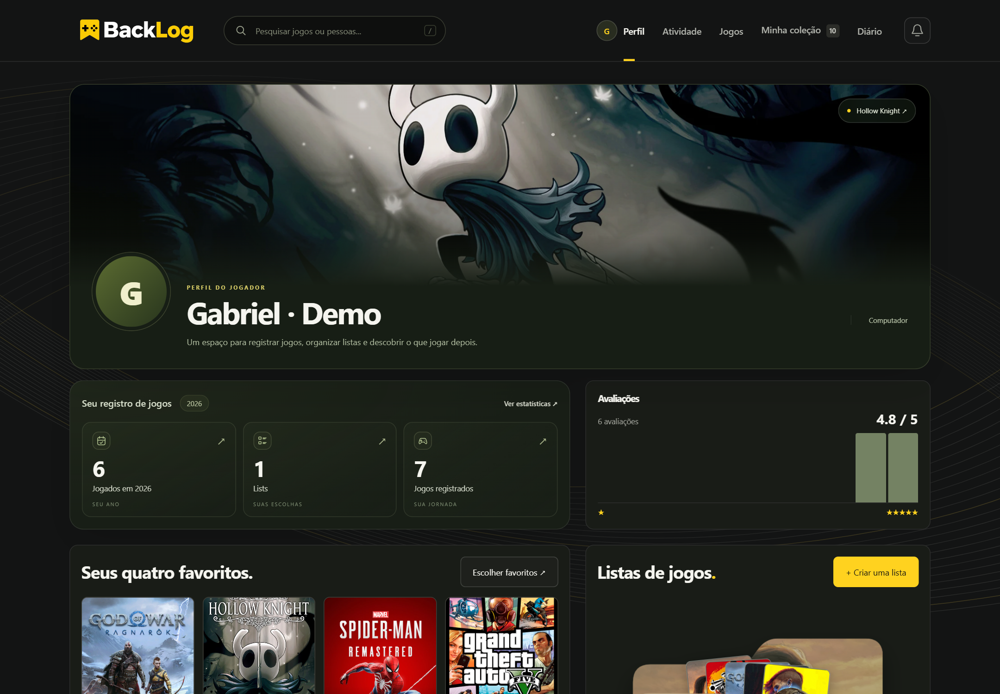

O QUE DÁ PARA FAZER
Seu perfil.
Seus jogos.
Seu BackLog.
PERFIL DEMONSTRATIVO

01Favoritos e listas
02Reviews e diário
03Discover e comunidade
Tela do projeto com dados demonstrativos.

Tela do projeto com dados demonstrativos.